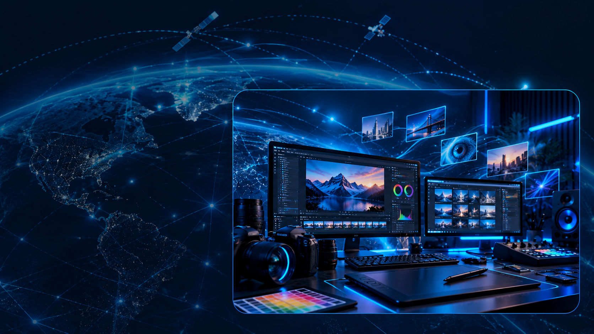

Visuele identiteit
Ruimte voor echte logo’s en uitgewerkte huisstijlen.
Grafisch ontwerp, digitale visuals en ideeën die een duidelijke visuele identiteit krijgen.
Een creatieve studio met ruimte voor vormgeving, digitale kunst, grafische concepten en visuele producties.
De kleuren mogen hier expressiever worden, maar de basis blijft diezelfde blauwe SITAKS Connected World.

De definitieve portfolio toont uitsluitend door SITAKS aangeleverde en goedgekeurde realisaties.
Ruimte voor echte logo’s en uitgewerkte huisstijlen.
Ruimte voor grafische campagnes en webdesign.
Ruimte voor andere creaties, illustraties en visuals.